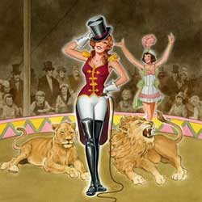

|
| Home|Talent|Cosmetic|Deformity|Abnormal|Ethnological |
TalentNot all freaks were observed for their physical differeces, some posessed unlikely talents, making for a variety of acts to appeal to an audience. The animal tammer, human cannonball, fire eaters, sword eaters, and weightlifters are amongst some of the most impressive shows that were present in the Freak Shows. It is somewhat refreshing that these shows were not only about examining the oddities of others, but also showed people who posessed some talent for entertainment purposes. Among them are: the animal trainers, human cannonballs, fire eaters, sword eaters, and weightlifters. Nonetheless, these people were still considerd, "freaks." Today, some of these acts are still seen in Circus Acts. |